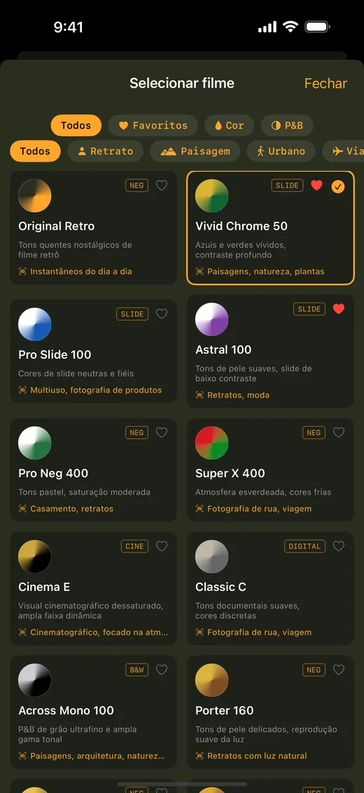

O instante passa.
A memória fica.
O caminho de casa, um pôr do sol, quem você ama. Mais de 20 simulações de filme e um carimbo de data dão às suas fotos o aconchego da fotografia analógica.
Baixar na App StoreDownload grátis · Compras no app · iOS 17.0+
Encontre seu filme
AN EXTRAORDINARY MEMORY.

Cada foto vira uma lembrança.
Carimbo de data retrô de 7 segmentos


Escolha seu filme.
Escolha entre mais de 20 simulações de filme, de slides vibrantes a negativos desbotados e preto e branco granulado de alta sensibilidade, cada uma ajustada para refletir o caráter do filme que a inspirou.

Suas fotos. Um novo sentimento.
Edite fotos, use receitas e salve até 20 fotos de uma vez. Assista a um anúncio para salvar grátis.
Remover banners de anúncios · Pular anúncios antes de salvar no LAB
Baixar na App StoreSem ajustes para se preocupar.
O Retro Camera 1960 transforma seu iPhone em uma câmera analógica de outra época. Cada filme é construído com LUTs 3D de cor precisa — a mesma ciência de cor usada na correção de cor profissional — combinadas com grão de filme real, halo de luz e vinheta. Não é apenas um filtro de um toque.
- 01Reprodução de cor com LUT 3D, não apenas um filtro
- 02Mais de 20 simulações de filme (slide, negativo, preto e branco, cinema)
- 03Alterne entre lentes grande angular, padrão e telefoto
- 04Carimbo de data retrô em estilo 7 segmentos em cada foto
- 05Localização GPS incorporada no EXIF (opcional, pode ser desativada)
- 06Salve o original sem edição junto com a foto filtrada
O download é grátis?
Download grátis · Compras no app. Edite fotos, use receitas e salve até 20 fotos de uma vez. Assista a um anúncio para salvar grátis.
Remover banners de anúncios · Pular anúncios antes de salvar no LAB
Posso editar fotos da minha biblioteca?
Edite fotos, use receitas e salve até 20 fotos de uma vez. Assista a um anúncio para salvar grátis.
iPhone · iOS 17.0+
Sua próxima lembrança começa aqui.
Baixar na App StoreDownload grátis · Compras no app · iOS 17.0+